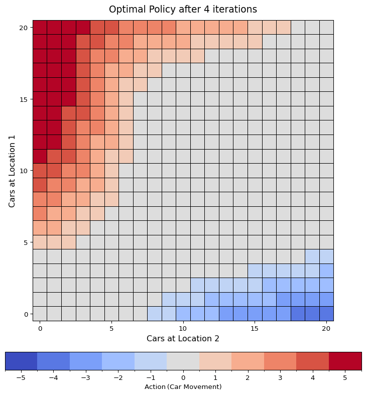
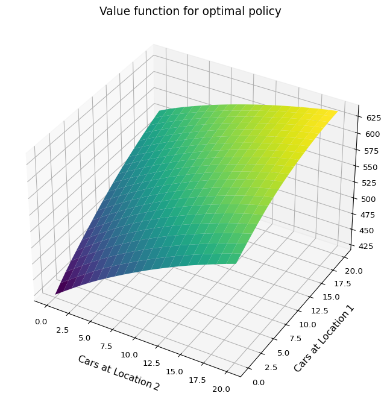

4 Dynamic Programming
4.1 Policy Evaluation
The Bellman equations for state-value Equation 3.12 and for action-value Equation 3.13 can be used as update rules to approximate \(v_\pi\) and \(q_\pi\): \[ v_{k+1}(s) = \sum_a \pi(a|s) \sum_{s',r} p(s',r|s,a)[r+\gamma v_{k}(s')] \tag{4.1}\] \[ q_{k+1}(s,a) = \sum_{s',r}p(s',r|s,a) [r + \gamma \sum_{a'}\pi(a'|s')q_k(s',a')] \tag{4.2}\]
These equations form the basis for iterative policy evaluation. The algorithm below demonstrates how to approximate \(v_\pi\), where updates are performed in “sweeps” rather than “chunk updates”. This constitutes the policy evaluations step,\(\pi \overset{\mathrm{Eval}}{\to} v_{\pi}\), in the policy iteration algorithm (Section 4.3).
Example 4.1 This is (Sutton and Barto 2018, Example 4.1)
Here is the quick summary:
- states: non-terminal states are numbered 1 through 14. The two gray cells are treated as a single terminal state.
- actions: Four deterministic actions available in each state: up, down, left, right. Moving “off the grid” results in no state change.
- rewards: A reward of -1 is given for every transition until the terminal state is reached
- return: undiscounted
And here are the state-values for the random policy:
Note that these values are (luckily) exact, which will be useful for the next exercises
Exercise 4.1 In Example 4.1, if \(\pi\) is the equiprobable random policy, what is \(q_\pi(11, \mathrm{down})\)? What is \(q_\pi(7, \mathrm{down})\)?
Solution 4.1. We can use the state-value function given in the example: \[ \begin{split} q_\pi(11, \mathrm{down}) &= -1 + 0 = -1\\ q_\pi(7, \mathrm{down}) &= -1 + v_\pi(11) = -1 + (-14) = -15 \end{split} \]
Exercise 4.2 In Example 4.1, suppose a new state 15 is added to the gridworld just below state 13, and its actions, left, up, right, and down, take the agent to states 12, 13, 14, and 15, respectively. Assume that the transitions from the original states are unchanged. What, then, is \(v_\pi(15)\) for the equiprobable random policy?
Now suppose the dynamics of state 13 are also changed, such that action down from state 13 takes the agent to the new state 15. What is \(v_\pi(15)\) for the equiprobable random policy in this case?
Solution 4.2. Since the MDP is deterministic and all transitions give the same reward, the undiscounted Bellman equation Equation 3.12 simplifies to: \[ v_{\pi}(s) = r + \sum_{a}\pi(a|s') [v_{\pi}(s')], \]
where \(r = -1\).
The first case is quite easy to compute. The transitions for all original states remain unchanged, so their values also remain unchanged. For the new state 15, we can write: \[ v_\pi(15) = -1 + \frac{1}{4}(v_\pi(12) + v_\pi(13) + v_\pi(14) + v_\pi(15)) \] which gives \(v_\pi(15) = -20\).
Now in the second case we might be up for a lot of work, as state 13 has a new transition: taking action “down” leads to state 15. This changes the dynamics of the MDP, so in principle the values might change. However, luckily the existing state-value function still satisfies the Bellman equation for state 13: \[ v_\pi(13) = -1 + \frac{1}{4}(v_\pi(12) + v_\pi(9) + v_\pi(13) + v_\pi(15)) \]
Substitute the known values we see that the equation holds \[ v_\pi(13) = -20 = -1 + \frac{1}{4}(-22 - 20 - 14 - 20) \]
So \(v_\pi(13)\) remains consistent with the new dynamics. Since all Bellman equations continue to hold with the same values, the state-value function does not change. So, \(v_\pi(15)=-20\) also in this case.
Exercise 4.3 What are the equations analogous to Equation 3.10, Equation 3.12, and Equation 4.1 for the action-value function \(q_\pi\) and its successive approximation by a sequence of functions \(q_0, q_1, \dots\)?
Solution 4.3. We have already stated these equations in tandem as Equation 3.11, Equation 3.13, and Equation 4.2.
4.2 Policy Improvement
An optimal policy can always be chosen to be deterministic. This is quite intuitive: why would introducing randomness in action selection be beneficial if all you care about is maximising expected return? More rigorously, if you are choosing between two actions, \(a_1\) and \(a_2\), and you know their values \(q_\pi(s,a_1)\) and \(q_\pi(s,a_2)\), then it is clearly best to take the one with the higher value. A key tool for this kind of reasoning is the policy improvement theorem.
Theorem 4.1 Let \(\pi\) be any policy and \(\pi'\) a deterministic policy. Then \(\pi \leq \pi'\) if \[ v_\pi(s) \leq q_\pi(s,\pi'(s)), \] for all \(s \in \mathcal{S}\).
Proof. From the assumption, we have: \[ \begin{split} v_\pi(s) &\leq q_\pi(s, \pi'(s)) \\ &= \mathbb{E}[R_{t+1} + \gamma v_\pi(S_{t+1}) \mid S_t = s, A_t = \pi'(s)] \\ &= \mathbb{E}_{\pi'}[R_{t+1} + \gamma v_\pi(S_{t+1}) \mid S_t = s] \\ \end{split} \] (if you wonder about the indices in the expectation: the first expectation is completely determined by the MDP, in the second one we stipulate action selection according to \(\pi'\).)
Now, we can unroll this expression recursively: \[ \begin{align} v_\pi(s) &\leq \mathbb{E}_{\pi'}[R_{t+1} + \gamma v_\pi(S_{t+1}) \mid S_t = s] \\ &\leq \mathbb{E}_{\pi'}[R_{t+1} + \gamma \mathbb{E}_{\pi'}[R'_{t+2} + \gamma v_\pi(S'_{t+2}) \mid S'_{t+1} = S_{t+1}] \mid S_t = s] \\ &= \mathbb{E}_{\pi'}[R_{t+1} + \gamma R_{t+2} + \gamma^2 v_\pi(S_{t+2}) \mid S_t = s] \end{align} \]
and so on. The last equality should be justified formally by the law of total expectation and the law of the unconscious statistician (Theorem 2.4 and Theorem 2.1).
Iterating this process a couple of times we get \[ v_\pi(s) \leq \mathbb{E}_{\pi'}\bigg[\sum_{i=0}^{N} \gamma^i R_{t+1+i} + \gamma^{N+1} v_\pi(S_{t+1+N}) \;\bigg|\; S_t = s \bigg] \]
and in the limit (everything is bounded so this should be kosher) \[ v_\pi(s) \leq \mathbb{E}_{\pi'}\bigg[\sum_{i=0}^{\infty} \gamma^i R_{t+1+i} \;\bigg| \; S_t = s \bigg] = v_{\pi'}(s). \]
This result allows us to show that every finite MDP has an optimal deterministic policy.
Let \(\pi\) be any policy. Define a new deterministic policy \(\pi'\) by \[ \pi'(s)= \underset{a \in \mathcal{A}}{\mathrm{argmax}} q_{\pi}(s,a) \]
By the policy improvement theorem, we have \(\pi \leq \pi'\). Now consider two deterministic policies, \(\pi_1\) and \(\pi_2\), and define their meet (pointwise maximum policy) as \[ (\pi_1 \vee \pi_2)(s) = \begin{cases}\pi_1(s) &\text{if } v_{\pi_1}(s) \geq v_{\pi_2}(s) \\ \pi_2(s) &\text{else} \end{cases} \]
Then, again by the policy improvement theorem, we have \(\pi_1, \pi_2 \leq \pi_1 \vee \pi_2\).
Now, since the number of deterministic policies is finite (as both \(\mathcal{S}\) and \(\mathcal{A}\) are finite), we can take the meet over all deterministic policies and obtain an optimal deterministic policy.
This leads directly to a characterisation of optimality in terms of greedy action selection.
Theorem 4.2 A policy \(\pi\) is optimal, if and only if, \[ v_\pi(s) = \max_{a \in \mathcal{A}(s)} q_{\pi}(s,a), \tag{4.3}\]
for all \(s \in \mathcal{S}\).
Proof. If \(\pi\) is optimal then \(v_\pi(s) < \max_{a} q_\pi(s,a)\) would lead to a contradiction using the policy improvement theorem.
For the converse we do an argument very similar to the proof of Theorem 4.1. So similar in fact that I’m afraid that were doing the same work twice. Let \(\pi\) satisfy Equation 4.3. We show that \(\pi\) is optimal by showing that \[ \Delta(s) = v_{\pi_*}(s) - v_{\pi}(s) \] is \(0\) for all \(s \in \mathcal{S}\), where \(\pi_*\) is any deterministic, optimal policy.
We can bound \(\Delta(s)\) like so \[ \begin{split} \Delta(s) &= q_{\pi_*}(s,\pi_*(s)) - \max_a q_{\pi}(s,a) \\ &\leq q_{\pi_*}(s,\pi_*(s)) - q_\pi(s,\pi_*(s)) \\ &= \mathbb{E}_{\pi_*}[ R_{t+1} + \gamma v_{\pi_*}(S_{t+1}) - (R_{t+1} + \gamma v_{\pi}(S_{t+1})) | S_{t} = s] \\ &= \mathbb{E}_{\pi_*}[\gamma \Delta(S_{t+1}) | S_t = s] \end{split} \]
Iterating this and taking the limit gives \[ \Delta(s) \leq \lim_{k \to \infty} \mathbb{E}_{\pi_*}[\gamma^k \Delta(S_{t+k}) \mid S_t = s] = 0. \]
For a policy \(\pi\), if we define \(\pi'(s) := \underset{a}{\mathrm{argmax}}\;q_\pi(s,a)\), we get an improved policy, unless \(\pi\) was already optimal. This constitutes the policy improvement step,\(v_\pi \overset{\mathrm{Imp}}{\to} \pi'\), in the policy iteration algorithm.
4.3 Policy Iteration
The policy iteration algorithm chains evaluation and improvement and converges to an optimal policy, for any initial policy \(\pi_0\): \[ \pi_0 \overset{\mathrm{Eval}}{\to} v_{\pi_0} \overset{\mathrm{Imp}}{\to} \pi_1 \overset{\mathrm{Eval}}{\to} v_{\pi_1} \overset{\mathrm{Imp}}{\to} \pi_2 \overset{\mathrm{Eval}}{\to} v_{\pi_2} \overset{\mathrm{Imp}}{\to} \dots \overset{\mathrm{Imp}}{\to} \pi_* \overset{\mathrm{Eval}}{\to} v_{*} \]
And here is the pseudo code.
Note that the final policy improvement step does not change the policy and is basically just checking that the current policy is optimal. So this is basically an extra step to see that this chain is done: \(\pi_0 \overset{\mathrm{Eval}}{\to} v_{\pi_0} \overset{\mathrm{Imp}}{\to} \dots \overset{\mathrm{Imp}}{\to} \pi_* \overset{\mathrm{Eval}}{\to} v_{*} \overset{\mathrm{Imp}}{\to} \text{Finished}\)
Example 4.2 This is (Sutton and Barto 2018, Example 4.2) - Jack’s car rental.
Here’s a quick summary:
- two locations, each with a maximum of 20 cars (more cars added to a location magically vanish into thin air)
- during the day, a random amount of customers rent cars and then another random amount of customers return cars
- at the end of a day, up to 5 cars can be moved between the locations
- each car rented rewards 10
- each move car costs 2
- rentals and returns are Poisson distributed:
\(\lambda_{1,\text{rent}} =3\), \(\lambda_{1,\text{return}} =3\), \(\lambda_{2,\text{rent}} =4\), \(\lambda_{2,\text{return}} =2\)
We solve Jack’s car rental using policy iteration. The core computation in policy iteration is the one-step lookahead, which is used both in policy evaluation and policy improvement. This is the main performance bottleneck: \[ (s,a) \to \sum_{s',r} p(s',r|s,a) [ r + \gamma V(s')] \]
This expression is good for theorizing about the algorithm but its direct implementation feels awkward and inefficient. In practice, it’s better to split the four-argument \(p(s',r|s,a)\) into expected immediate reward \(r(s,a)\) and the transition probability \(p(s'|s,a)\).
\[ \begin{split} \sum_{s',r}p(s',r|s,a)[r + \gamma V(s')] &= \sum_{s',r}p(s',r|s,a)r + \gamma\sum_{s',r}p(s',r|s,a)V(s') \\ &= r(s,a) + \gamma \sum_{s'}p(s'|s, a) V(s') \end{split} \]
Furthermore, we can make the algorithm more natural for this problem by introducing afterstates (Sutton and Barto 2018, sec. 6.8). Although we don’t use them to their full potential (we don’t learn an afterstate value function).
An afterstate is the environment state immediately after the agent’s action, but before the environment’s stochastic dynamics. This formulation is particularly effective when actions have deterministic effects. In Jack’s car rental, moving cars deterministically leads to an afterstate \(s \oplus a\), while the stochastic dynamics—rentals and returns—then determine the next state \(s'\).
The one-step lookahead using afterstates becomes: \[ (s,a) \to c(a) + r(s \oplus a) + \gamma \sum_{s'} p(s'|s\oplus a)V(s'), \tag{4.4}\]
where \(c(a)\) is the cost of the, \(r(s \oplus a)\) is the expected immediate reward for the afterstate.
The following code is a nearly verbatim implementation of the policy iteration pseudocode, using Equation 4.4 for evaluation. (Select annotations to see inline explanations.)
# === policy iteration for Jack's car rental ===
from collections import namedtuple
from typing import Dict, List
from scripts.jacks_car_rental.jacks_car_rental import (
JacksCarRental,
State,
Action,
)
Policy = Dict[State, Action]
ValueFn = Dict[State, float]
def compute_state_action_value(
env: JacksCarRental, state: State, action: Action, value: ValueFn, γ: float
) -> float:
"""
Compute the expected one‐step return
"""
after_state, cost = env.move(state, action)
future_return = 0.0
for state_new in env.state_space:
p = env.get_transition_probability(after_state, state_new)
future_return += p * value[state_new]
return cost + env.get_expected_revenue(after_state) + γ * future_return
def policy_evaluation(
env: JacksCarRental, π: Policy, value: ValueFn, θ: float, γ: float
):
"""
Approximates the ValueFn from a deterministic policy
"""
while True:
Δ = 0.0
for s in env.state_space:
v_old = value[s]
v_new = compute_state_action_value(env, s, π[s], value, γ)
value[s] = v_new
Δ = max(Δ, abs(v_old - v_new))
if Δ < θ:
break
def policy_improvement(
env: JacksCarRental, π: Policy, value: ValueFn, γ: float
) -> bool:
"""
Improve a policy according to the provided value‐function
If no state's action changes, return True (policy is stable). Otherwise return False.
"""
stable = True
for s in env.state_space:
old_action = π[s]
best_action = max(
env.action_space,
key=lambda a: compute_state_action_value(env, s, a, value, γ),
)
π[s] = best_action
if best_action != old_action:
stable = False
return stable
PolicyIterationStep = namedtuple("PolicyIterationStep", ["policy", "values"])
def policy_iteration(env, θ, γ) -> List[PolicyIterationStep]:
optimal = False
history = []
# init policy and value-function
π: Policy = {s: 0 for s in env.state_space}
value: ValueFn = {s: 0.0 for s in env.state_space}
while not optimal:
# evaluation and save
policy_evaluation(env, π, value, θ, γ)
history.append(PolicyIterationStep(π.copy(), value.copy()))
# find better policy
optimal = policy_improvement(env, π, value, γ)
return history- 1
- Import the environment class and type aliases (State, Action) from the Jack’s car‐rental module.
- 2
- Since we are dealing with deterministic policies we can define Policy as a mapping.
- 3
- Implements the one‐step lookahead with afterstates (see Equation 4.4).
- 4
- Choose the action \(a\in A\) that maximises the one‐step lookahead; this is a concise way to do “\(\mathrm{argmax}_a \dots\)”” in Python
- 5
- The only slight change to the pseudocode: instead of just returning the optimal policy and its state-value function we return the history of policies.
Here is some more code just to be able to visualize our solution for Jack’s car rental problem…
Code
import numpy as np
import matplotlib.pyplot as plt
from matplotlib.colors import BoundaryNorm
from matplotlib import cm
from scripts.jacks_car_rental.jacks_car_rental import (
JacksCarRentalConfig,
)
def plot_policy(title: str, config: JacksCarRentalConfig, π: dict):
max_cars = config.max_cars
max_move = config.max_move
# Build a (max_cars+1)×(max_cars+1) integer grid of “action” values
policy_grid = np.zeros((max_cars + 1, max_cars + 1), dtype=int)
for (cars1, cars2), action in π.items():
policy_grid[cars1, cars2] = action
# X/Y coordinates for pcolormesh:
x = np.arange(max_cars + 1)
y = np.arange(max_cars + 1)
X, Y = np.meshgrid(x, y)
fig, ax = plt.subplots(figsize=(9, 9))
# Discrete actions range
actions = np.arange(-max_move, max_move + 1)
n_colors = len(actions)
# Create a “coolwarm” colormap with exactly n_colors bins
cmap = plt.get_cmap("coolwarm", n_colors)
# For a discrete colormap, we want boundaries at x.5, so that integer values
# get mapped to their own color. Example: if max_move=2, actions = [-2, -1, 0, 1, 2],
# then boundaries = [-2.5, -1.5, -0.5, 0.5, 1.5, 2.5].
bounds = np.arange(-max_move - 0.5, max_move + 0.5 + 1e-6, 1)
norm = BoundaryNorm(boundaries=bounds, ncolors=cmap.N)
cax = ax.pcolormesh(
X,
Y,
policy_grid,
cmap=cmap,
norm=norm,
edgecolors="black",
linewidth=0.4,
)
# Axis labels and title
ax.set_xlabel("Cars at Location 2", fontsize=12)
ax.set_ylabel("Cars at Location 1", fontsize=12)
ax.set_title(title, fontsize=14, pad=12)
# Square aspect ratio so each cell is a square:
ax.set_aspect("equal")
# Ticks every 5 cars
step = 5
ax.set_xticks(np.arange(0, max_cars + 1, step))
ax.set_yticks(np.arange(0, max_cars + 1, step))
# Colorbar (horizontal, at the bottom)
cbar = fig.colorbar(
cax,
ax=ax,
orientation="horizontal",
pad=0.08,
shrink=0.85,
boundaries=bounds,
ticks=actions,
label="Action (Car Movement)",
)
cbar.ax.xaxis.set_label_position("bottom")
cbar.ax.xaxis.tick_bottom()
fig.tight_layout(rect=[0, 0.03, 1, 1])
plt.show()
def plot_valueFn(title, config, val):
"""
3D surface plot of the value function
"""
max_cars = config.max_cars
# Build a (max_cars+1)×(max_cars+1) grid of value estimates
value_grid = np.zeros((max_cars + 1, max_cars + 1), dtype=float)
for (l1, l2), v in val.items():
value_grid[l1, l2] = v
# Meshgrid for locations on each axis
x = np.arange(max_cars + 1)
y = np.arange(max_cars + 1)
X, Y = np.meshgrid(x, y)
fig = plt.figure(figsize=(11, 7))
ax = fig.add_subplot(111, projection="3d")
# Shaded surface plot
surf = ax.plot_surface(
X,
Y,
value_grid,
rstride=1,
cstride=1,
cmap=cm.viridis,
edgecolor="none",
antialiased=True,
)
ax.set_xlabel("Cars at Location 2", fontsize=12, labelpad=10)
ax.set_ylabel("Cars at Location 1", fontsize=12, labelpad=10)
ax.set_title(title, fontsize=14, pad=12)
ax.view_init(elev=35, azim=-60)
fig.tight_layout()
plt.show()…and now we can solve it:
# === Solving Jack's car rental ===
# Hyperparameter for "training"
γ = 0.9
θ = 1e-5
# config and environment
config = JacksCarRentalConfig(max_cars=20)
env = JacksCarRental(config)
# do policy iteration
history = policy_iteration(env, θ, γ)
# print last (optimal) policy and its value function
plot_policy(
f"Optimal Policy after {len(history)-1} iterations", config, history[-1].policy
)
plot_valueFn(f"Value function for optimal policy", config, history[-1].values)


The runtime of this policy iteration is quite reasonable - just a few seconds. But considering we’re only dealing with \(441\) states, it highlights how dynamic programming is limited to small MDPs.
Another thought: although we now have the optimal solution, the meaning of the value function is still somewhat abstract. Mathematically it’s clear, but I couldn’t, for example, directly interpret from it whether Jack can pay his monthly rent with this business.
Exercise 4.4 The policy iteration algorithm on page 80 (Sutton and Barto 2018) (also see Section 4.3) has a subtle bug in that it may never terminate if the policy continually switches between two or more policies that are equally good. This is ok for pedagogy, but not for actual use. Modify the seudocode so that convergence is guaranteed.
Solution 4.4. Assuming perfect precision in computation then the only problem could be the determination of the argmax.
If ties in the argmax are determined randomly, this could easily result in a soft-lock when there are enough states with possible ties. Here we should add a condition that the policy is only changed if the change results in an actual improvement.
If we don’t assume perfect precision then maybe calculating the value function can also result in floating point flips for “best action”. In this case we should maybe only change the policy action if it improves the value by more than \(\theta\).
So this should be a practical fix for that bug:
Sutton, Richard S., and Andrew G. Barto. 2018. Reinforcement Learning: An Introduction. Second edition. Adaptive Computation and Machine Learning Series. Cambridge, MA: MIT Press. https://mitpress.mit.edu/9780262039246/reinforcement-learning/.